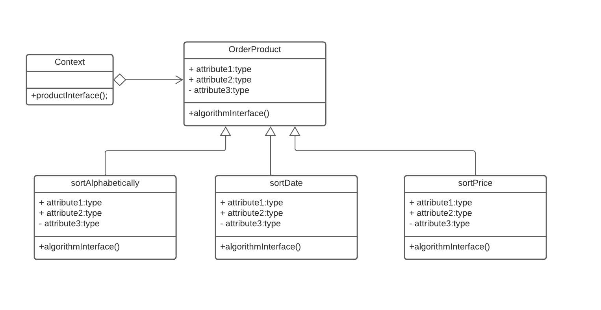

Histórico de Versão
| Data | Versão | Descrição | Autor(es) |
|---|---|---|---|
| 07/03/2022 | 1.0 | Criação do documento | Victor |
| 14/03/2022 | 1.1 | Adicionando exemplo | Victor |
| 14/03/2022 | 1.2 | Adicionando Template Method | Luis Marques |
GOFs Comportamentais
Os GoFs comportamentais são padrões de projetos mais voltados para alterações no nível do comportamento dos objetos. Eles auxiliam principalmente quando são utilizados vários algoritmos diferentes.
Metodologia
Para construção do diagrama do Template Method é do Strategy, foi utilizado a ferramenta lucidchart, utilizando como modelo para confecção os diagramas apresentados em aula pela professora Milene Serrano. Para exemplificação em código foi criado um exemplo exemplo-TOY de aplicação do projeto para cada GOF exemplificada.
Strategy
O Strategy é um dos principais Gofs Comportamentais, que permite de maneira simples, variar dos algoritmos utilizados e resolver um certo problema.
O Strategy propõe uma solução que possibilita a variação facilitada do algoritmo a ser utilizado. Um exemplo seria utilizar um função em python que é passada como parâmetro para um outro método.
O padrão de projeto strategy sugere que todos os algoritmos centralizados nesta classe sejam separados em outras classes.
Quando usar?
É indicado usar, quando é necessário vários algoritmos com diferentes variações. Além disso, quando existem declarações condicionais em torno de vários algoritmos relacionados. E por fim, quando muitas 'Classes' tem comportamento relacionado.
Exemplo do diagrama UML deste padrão, que pode ser aplicado no projeto:

Exemplo de implementação em Python, que pode ser aplicado no projeto:
from Calculator_de_impostos(object):
def realiza_calculo(self, orcamento, imposto):
imposto_calculado = imposto.calcula(orcamento)
printf imposto_calculado
if __name__ == '__main__':
from orcamento import Orcamento
calculator = Calculator_de_impostos()
orcamento = Orcamento(350)
calculator.realiza_calculo(orcamento, ISS().calcula)
calculator.realiza_calculo(orcamento, IOMS().calcula)
class ISS(object):
def calcula(self, orcamento):
return orcamento.valor = 0.1
class ICMS(object):
def calcula(self, orcamento):
return orcamento.valor = 0.065
Vantagens:
- Reutilização de código
- Manutenibilidade do código;
- É fácil alternar entre diferentes algoritmos (estratégias) em tempo de execução.
- Código limpo, pois se evita o código com excesso de estruturas condicionais.
Desvantagens:
- Aumento do número de classes do projeto.
- Aumento do número de objetos.
Template Method
O Template Method e um padrão de GOF comportamental onde a ordem dos métodos nao deve ser alterada,seguindo o template da classe mãe nas filhas, mesmo que o método em si seja alterado. Com isso em mente a ideia central por trás do template method, como o próprio nome sugere , e a criação de um template padrão(normalmente feito de forma abstrata) para a manutenção da ordem de execução dos métodos, não importando como estes métodos funcionam internamente.
Template Method Estrutura
{kind=link}
Como exemplo da estrutura básica usada temos a estrutura mostrada acima. onde existe uma AbstractClass, que contem os templates de método é a ordem dos operadores que serão executadas, é a classe ConcreteClass que herda da classe Abstrata, é por sua vez efetua alteração nos métodos primitiveOperation, sem realizar alteração em sua ordem de execução.
Template Method Aplicação.
1.Modelagem
Para um exemplo de aplicação no contexto do projeto foi realizada a criação de uma nova classe Cart, que sera criada a partir do diagrama de classe, implementando novos métodos que antes não estavam incluídos no projeto original.
{kind=link}
2.Exemplo em Código
Para Aplicação do Template Method foi criado um código em python, tentando exemplificar ao máximo o programação orientada a objeto utilizando um mesmo arquivo. Utilizando um sistema de pagamento somente simplificado, pois seria necessário o cadastro em algumas plataformas para correto funcionamento da API de pagamentos.
2.1 Codigo fonte
from cieloApi3 import *
import json
environment = Environment(sandbox=True)
class Cart():
def __init__(self,id,Client,OrderItens,addressOfDelivery,PaymentMethod,cost):
self.id = id
self.Client = Client
self.OrderItens = OrderItens
self.addressOfDelivery = addressOfDelivery
self.PaymentMethod = PaymentMethod
self.cost = cost
def ValidateClient(self):
if(self.Client != None):
return True
else:
return False
def ValidateItens(self):
if(self.OrderItens != None):
return True
else:
return False
def ValidateAddress(self):
if(self.Address != None):
return True
else:
return False
def ValidatePaymentMethod(self):
## Implementação posterior
return None
def ValidateCart(self):
if(self.ValidateClient() and self.ValidateItens() and self.ValidateAddress() and self.ValidatePaymentMethod() and self.ValidateCart()):
return True
else:
return False
class CartCardPayment(Cart):
def __init__(self,id,Client,OrderItens,addressOfDelivery,PaymentMethod,cost,CardNumber,CardExpirate,CardName):
super().__init__(id,Client,OrderItens,addressOfDelivery,PaymentMethod,cost)
self.CardNumber = CardNumber
self.CardExpirate = CardExpirate
def ValidateClient(self):
super().ValidateClient()
def ValidateItens(self):
super().ValidateItens()
def ValidateAddress(self):
super().ValidateAddress()
def ValidatePaymentMethod():
if(super.PaymentMethod == "Card"):
idnum = self.id
credit_card = CreditCard(id, 'Visa')
credit_card.expiration_date = CardEpirate
credit_card.card_number = CardNumber
credit_card.holder = CardName
sale = Sale(self.id)
sale.customer = Customer(self.CardName)
sale.payment = Payment(self.cost)
sale.payment.credit_card = credit_card
response_create_sale = cielo_ecommerce.create_sale(sale)
payment_id = sale.payment.payment_id
if(payment_id != None):
return True
else:
return False
else:
return False
def ValidateCart():
return super().ValidateCart()
class BillPayment(Cart):
def __init__(self,id,Client,OrderItens,addressOfDelivery,PaymentMethod,cost,BillName,PaymentBank):
super().__init__(id,Client,OrderItens,addressOfDelivery,PaymentMethod,cost)
self.BillName = BillName
self.PaymentBank = PaymentBank
def ValidateClient(self):
super().ValidateClient()
def ValidateItens(self):
super().ValidateItens()
def ValidateAddress(self):
super().ValidateAddress()
def ValidatePaymentMethod():
if(super.PaymentMethod == "BILL"):
idnum = self.id
sale = Sale(self.id)
sale.customer = Customer(self.CardName)
sale.payment = Payment(self.cost)
sale.payment.provider = (self.PaymentBank)
response_create_sale = cielo_ecommerce.create_sale(sale)
payment_id = sale.payment.payment_id
if(payment_id != None):
return True
else:
return False
else:
return False
def ValidateCart():
return super().ValidateCart()
Referências
SERRANO, Milene. Arquitetura e Desenho de Software: Aula GoFs Comportamentais, disponível em:
. DevMedia. Estudo e Aplicação do Padrão de Projeto Strategy Disponível em: https://www.devmedia.com.br/estudo-e-aplicacao-do-padrao-de-projeto-strategy/25856.
DevMedia. Design Patterns: Padrões “GoF”. Disponível em https://www.devmedia.com.br/design-patterns-padroes-gof/16781.
GAMMA, Erich; HELM, Richard; JOHNSON, Ralph; VLISSIDES, John. Padrões de Projeto: Soluções reutilizáveis de software orientado a objetos. Porto Alegre: Bookman, 2007.
API-3.0-Python disponível em: API-3.0-Python. Último acesso em: 14 de março de 2022).